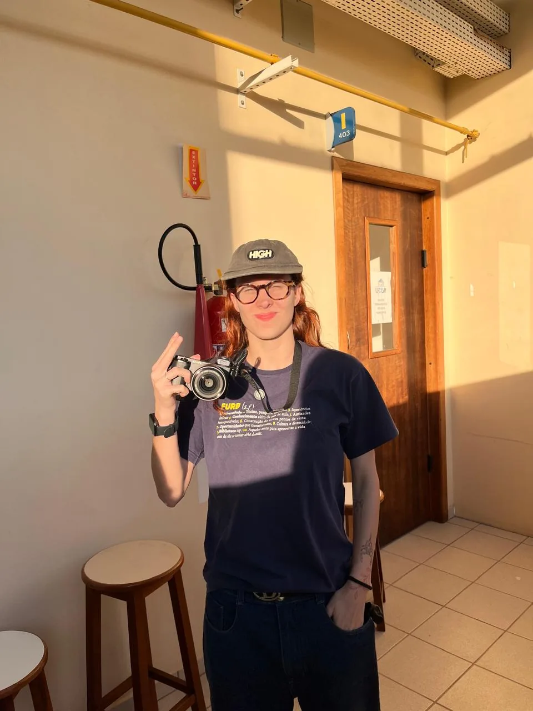
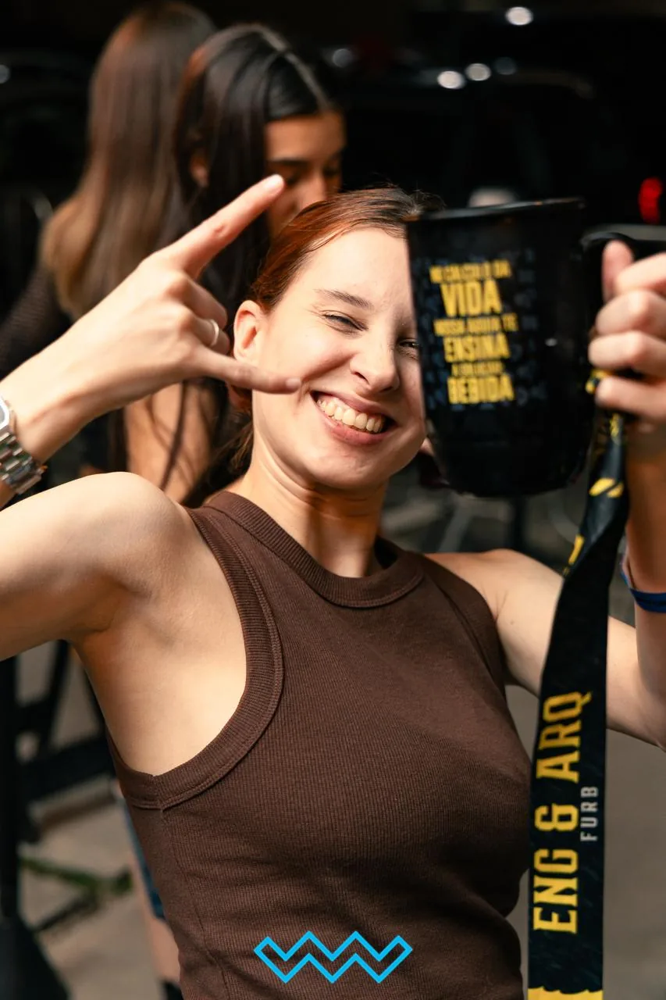
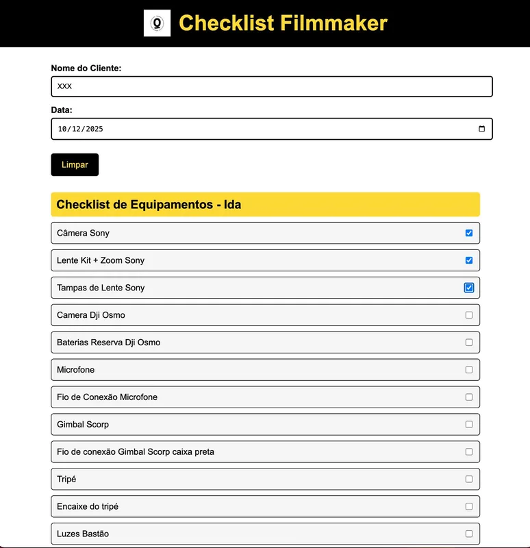
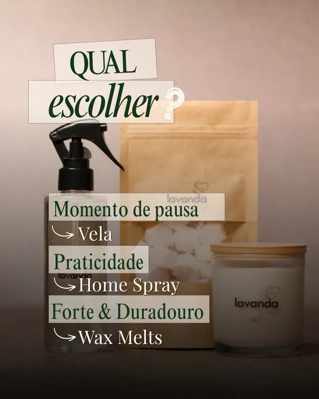
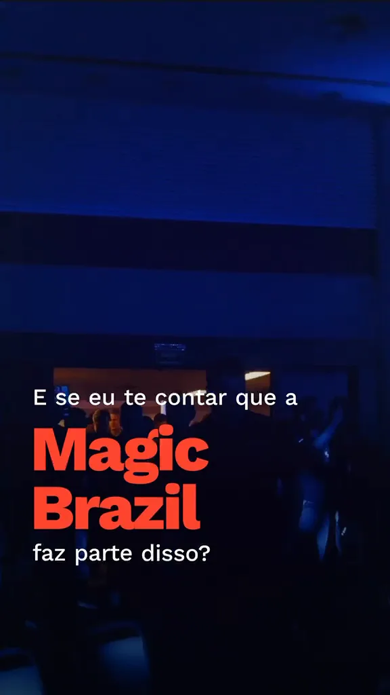
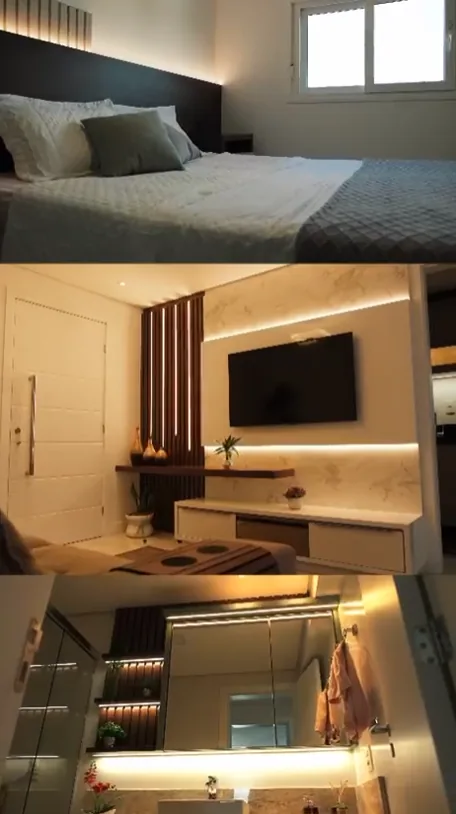
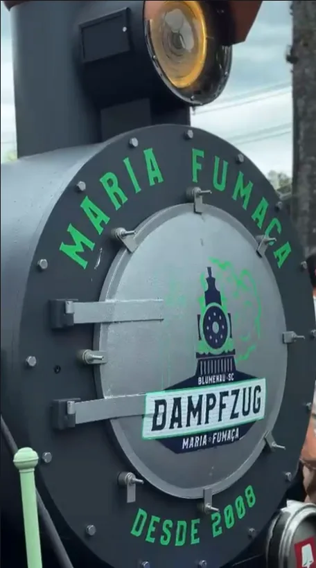
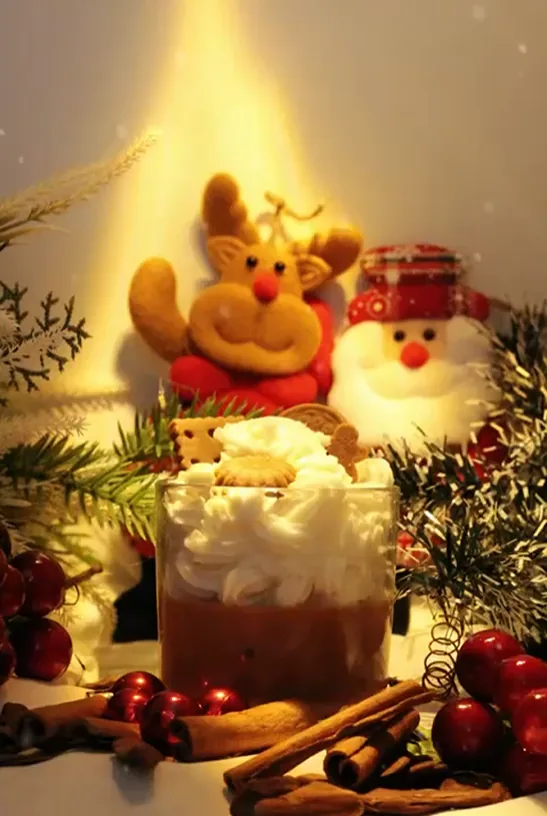
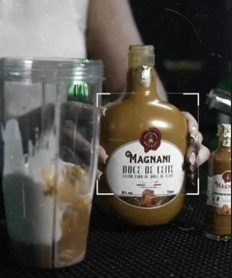
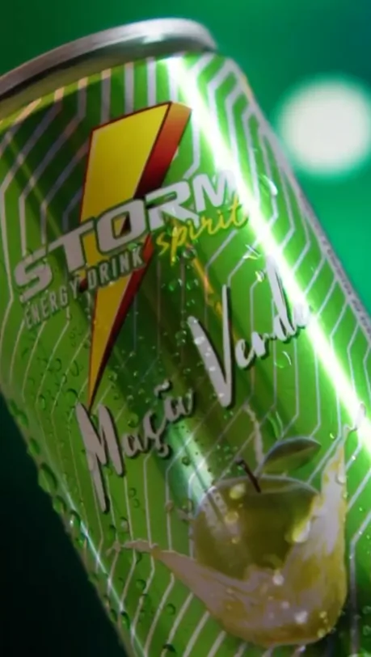

01
Filmmaker
Produção de conteúdo audiovisual com narrativa envolvente e qualidade cinematográfica.
Bastidores
Criatividade multidisciplinar
Filmmaker • Fotógrafa • Programadora • Social Media • Roteirista

Eu sou a Betina, atualmente cursando o melhor curso de todos: Publicidade e Propaganda, hehe :)
Meus hobbies são tocar teclado, ler livros e jogar um PS5.
Minha batalha constante é achar uma música boa pra algum vídeo.

Sou muito legal.
E prometo sempre entregar vídeos
antes do prazo.(Isso realmente é uma qualidade boa.)
Ah, e eu sempre entrego
mais de uma opçãosem cobrar nada a mais. Então, sim, eu sou muito legal.
Quando você me chamar pra conversar no WhatsApp, se prepare pra receber as melhores figurinhas da sua vida.
E observação: eu vou
aaamaaarrrrrrfazer um job pra você.
Então, tá esperando o quê?
Me chama logoooooo.
Serviços e habilidades
Sou uma profissional multidisciplinar apaixonada por contar histórias através de diferentes mídias. Com experiência em filmmaking, fotografia, programação, gestão de redes sociais e roteiro, trago uma visão única e integrada para cada projeto. Acredito que a combinação dessas habilidades permite criar trabalhos mais completos e impactantes.
01
Produção de conteúdo audiovisual com narrativa envolvente e qualidade cinematográfica.
02
Ensaios fotográficos, fotografia de eventos e editoriais com tratamento de imagem profissional.
03
Desenvolvimento web front-end, criação de sites responsivos, landing pages e aplicações web.

04
Gestão de redes sociais, criação de conteúdo estratégico, planejamento de calendário editorial.

05
Criação de roteiros para vídeos, documentários, curtas-metragens e conteúdo publicitário com storytelling impactante.

Portfólio
Assista aqui mesmo, sem sair do site. Clique em qualquer projeto para dar o play.





Arraste para o lado e clique para ver em tamanho maior.
Mel Aromas — posts para redes sociais.
Sistemas e sites desenvolvidos do zero.
Me conta a sua ideia. Eu respondo rapidinho (e com figurinha).
betinabaron884@gmail.com · (47) 98484-9040 · Blumenau, SC